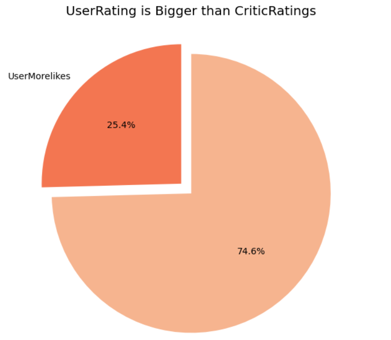

{% with messages = get_flashed_messages() %}
{% if messages %}
{% endif %}
{% endwith %}
{% extends "_base.html" %}
{% block title %}최신 해외 수상작 추천 서비스{% endblock %}
{% block css %}
{% endblock %}
{% block content %}

The Academy Awards, popularly known as the Oscars, are awards for artistic and technical merit in the film industry. They are regarded as the most prestigious and significant awards in the entertainment industry worldwide. Given annually by the Academy of Motion Picture Arts and Sciences (AMPAS), the awards are an international recognition of excellence in cinematic achievements, as assessed by the Academy's voting membership. The various category winners are awarded a copy of a golden statuette as a trophy, officially called the "Academy Award of Merit", although more commonly referred to by its nickname, the "Oscar". The statuette depicts a knight rendered in the Art Deco style.

{% endblock %}